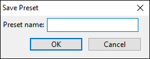
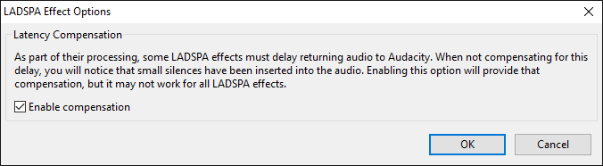
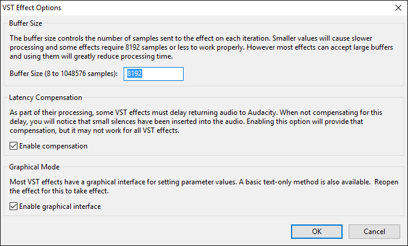
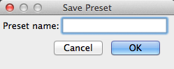
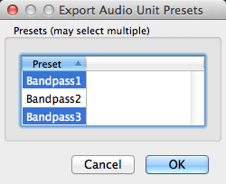
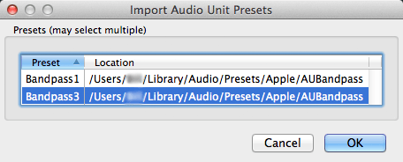
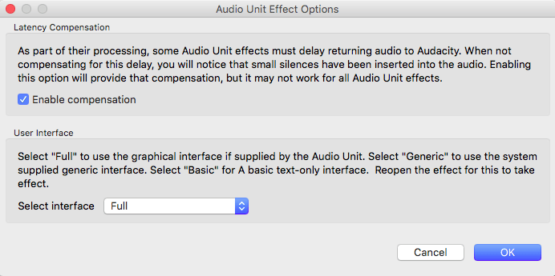

Effect Menu
From Audacity Development Manual
To apply an effect, select part or all of the track(s) you want to modify, and select the effect from the menu. Titles which end in an ellipsis (...) will bring up a dialog asking you for more parameters.
All effects that have a dialog let you hear the audio as modified by the effect before you apply the effect to the waveform.
- Built-in effects, Nyquist plug-ins included in Audacity and other Nyquist plug-ins have a Preview button - press this to listen if the current effect settings produce what you want, and if not, change the settings then Preview again. Press to apply the effect to the waveform.
- All other effect types supported in Audacity (LADSPA, LV2, VST and Audio Units for Mac) support real-time preview - you can change the effect settings while listening then press to apply the effect to the waveform.
| When playing, recording or paused, effects in the Effect menu that do not support real-time preview will appear grayed out. Press the yellow Stop |
Contents
- Nyquist effect plug-ins
- LADSPA effect plug-ins
- LV2 effect plug-ins
- VST effect plug-ins
- Audio Unit plug-ins (Mac only)
Add / Remove Plug-ins...
Selecting this option from the Effect Menu (or the Generate Menu or Analyze Menu) takes you to a dialog which enables you to load and unload Effects (and Generators and Analyzers) from Audacity. This enables you to customize your Effect Menu making it shorter or longer as required. For details see Add / Remove Effects, Generators and Analyzers.
By default all the Built-in effects, with the exception of Classic Filters, are loaded in Audacity.
- Installing Effect, Generator and Analyzer plug-ins on Windows
- Installing Effect, Generator and Analyzer plug-ins on Mac
- Installing Effect, Generator and Analyzer plug-ins on Linux
See also this list of available Nyquist effect plug-ins on the Audacity Wiki, that you can easily download and add to Audacity.
Built-in effects
Audacity's built-in effects (those that appear in the application irrespective of the contents of your Audacity and other "Plug-Ins" folders) are above the divider in the Effect menu.
All selected tracks are previewed irrespective of whether the tracks are muted or soloed. This is because the effect is applied to the selected audio. If Preview does not sound quite as you want, adjust the controls of the effect and Preview again.
Built-in effects support saving of user presets but do not yet support real-time preview or import/export of presets from/to other machines.
Amplify...
Increases or decreases the volume of the audio you have selected. When you open the dialog, Audacity automatically calculates the maximum amount you could amplify the selected audio without causing clipping (distortion caused by trying to make the audio too loud).
Auto Duck...
Reduces (ducks) the volume of one or more tracks whenever the volume of a specified "control" track reaches a particular level. Typically used to make a music track softer whenever speech in a commentary track is heard.
Bass and Treble...
Increases or decreases the lower frequencies and higher frequencies of your audio independently. It behaves just like the bass and treble controls on a domestic stereo system.
Change Pitch...
Change the pitch of a selection without changing its tempo.
Change Speed...
Change the speed of a selection, also changing its pitch.
Change Tempo...
Change the tempo and length (duration) of a selection without changing its pitch.
Classic Filters...
Provides three different types of filters which together emulate the vast majority of analog filters, and provides useful tools for analysis and measurement.
Click Removal...
Click Removal is designed to remove clicks on audio tracks and is especially suited to declicking recordings made from vinyl records. It will usually work best on very short clicks. For broader individual pops in selections up to 128 samples wide (about three milliseconds at 44100 Hz project rate), you could try the Repair effect.
Compressor...
Compresses the dynamic range by two alternative methods. The default "RMS" method makes the louder parts softer, but leaves the quieter audio alone. The alternative "peaks" method makes the entire audio louder, but amplifies the louder parts less than the quieter parts. Make-up gain can be applied to either method, making the result as loud as possible without clipping, but not changing the dynamic range further.
Distortion...
Use the Distortion effect to make the audio sound distorted. By distorting the waveform the frequency content is changed, which will often make the sound "crunchy" or "abrasive".
Technically this effect is a waveshaper. The result of waveshaping is equivalent to applying non-linear amplification to the audio waveform. Preset shaping functions are provided, each of which produces a different type of distortion.
Echo...
Repeats the selected audio again and again, normally softer each time. The delay time between each repeat is fixed, with no pause in between each repeat. For a more configurable echo effect with a variable delay time and pitch-changed echoes, see Delay...
Equalization...
Adjusts the volume levels of particular frequencies.
Fade In
Applies a fade-in to the selected audio, so that the amplitude changes gradually from silence at the start of the selection to the original amplitude at the end of the selection. The shape of the fade is linear. The rapidity of the fade-in depends entirely on the length of the selection it is applied to.
Fade Out
Applies a fade-out to the selected audio, so that the amplitude changes gradually from the original amplitude at the start of the selection down to silence at the end of the selection. The shape of the fade is linear. The rapidity of the fade-out depends entirely on the length of the selection it is applied to.
Invert
Flips the audio samples upside-down. This normally does not affect the sound of the audio at all. It is occasionally useful for vocal removal.
Noise Reduction...
Reduces constant background noise such as fans, tape noise, or hums. It will not work for removing talking or music in the background.
Normalize...
Use the Normalize effect to set the maximum amplitude of a track, equalize the amplitudes of the left and right channels of a stereo track and optionally remove any DC Offset from the track.
Nyquist Prompt...
Launches a dialog where you can enter Nyquist commands. Nyquist is a applicationming language for producing and processing audio. For more information see Nyquist Plug-ins Reference.
Paulstretch...
Use Paulstretch only for an extreme time-stretch or "stasis" effect. This may be useful for synthesizer pad sounds, identifying performance glitches or just creating interesting aural textures. Use Change Tempo or Sliding Time Scale rather than Paulstretch for tasks like slowing down a song to a "practice" tempo.
Phaser...
The name "Phaser" comes from "Phase Shifter", because it works by combining phase-shifted signals with the original signal. The movement of the phase-shifted signals is controlled using a Low Frequency Oscillator (LFO).
Repair
Fix one particular short click, pop or other glitch no more than 128 samples long.
Repeat...
Repeats the selection the specified number of times.
Reverb...
Adds ambience or a "hall effect".
Reverse
Reverses the selected audio, so that it will sound as if it is playing from the end to the start.
Sliding Time Scale / Pitch Shift...
Allows you to make a continuous change to the tempo and/or pitch of a selection by choosing initial and/or final change values.
Time Tracks can be used to bend tempo more flexibly (also affecting pitch) using Envelope Tool.
Truncate Silence...
Automatically try to find and eliminate audible silences. Don't use with faded audio.
Wahwah...
Rapid tone quality variations, like that guitar sound so popular in the 1970's.
Wahwah uses a moving bandpass filter to create its sound. A low frequency oscillator (LFO) is used to control the movement of the filter throughout the frequency spectrum.
The phase of the left and right channels is automatically adjusted when given a stereo track, so that the effect seems to travel across the speakers.
Nyquist effects
Nyquist plug-ins provide most of the optional effects underneath the divider in the Effect menu. They are also used to provide some of Audacity's built-in audio generators and analysis tools. A wide range of additional Nyquist effect, generation and analysis plug-ins can be obtained from Download Nyquist Plug-ins on our Wiki.
The button in most Nyquist effect dialogs opens a "Nyquist Output" window containing any informational or error output provided by the effect. This is primarily of use when writing or editing Nyquist plug-ins. After pressing in this window, the effect or other chosen action is attempted just as it would be if pressing OK in the effect instead of using the Debug button.
For detailed instructions on installing Nyquist plug-ins for Audacity see: Windows, Mac or Linux
To load the new effects into Audacity so they are available in the menu, use the Plug-in Manager: Effects, Generators and Analyzers dialog.
| Some Nyquist plug-ins could crash while processing very long audio selections (typically an hour or more). This is due to the plug-in using a large amount of memory and is a known issue in Audacity's current Nyquist implementation. Try using the plug-in on shorter selections instead. |
Nyquist Workbench
For advanced users who can compile Audacity, Nyquist Workbench gives the ability to run arbitrary Nyquist code in Audacity from a graphical IDE (Integrated Development Environment). See Nyquist Workbench in the Wiki for details.
Nyquist plug-ins included in Audacity
The following sample Nyquist plug-ins are included in released builds of Audacity:
Adjustable Fade...
Launches a dialog box where you can choose the shape of the fade in or fade out to be applied. You can also create fades to and from other than silence or full volume. An example of this might be a fade in from 20% of the original volume to 80% of the original volume.
Clip Fix...
Attempts to reconstruct clipped regions by interpolating the lost signal.
Crossfade Clips
Applies a simple crossfade to a selected pair of clips in a single audio track.
Crossfade Tracks
Applies a crossfade to a selected region of a pair of tracks.
Delay...
A configurable delay effect with variable delay time and pitch shifting of the delays.
High Pass Filter...
Passes frequencies above its cutoff frequency and attenuates frequencies below its cutoff frequency; this can be used to reduce low frequency noise.
Limiter...
Limiter passes signals below a specified input level unaffected or gently reduced, while preventing the peaks of stronger signals from exceeding this threshold. Limiting is a type of dynamic range compression. Mastering engineers often use limiting combined with make-up gain to increase the perceived loudness of an audio recording during the audio mastering process.
Low Pass Filter...
Passes frequencies below its cutoff frequency and attenuates frequencies above its cutoff frequency; this can be used to reduce high pitched noise.
Notch Filter...
Greatly attenuate ("notch out") a narrow frequency band. This is a good way to reduce mains hum or a whistle confined to a specific frequency with minimal damage to the remainder of the audio.
Spectral edit multi tool
If a fully defined spectral selection has been made, choosing Spectral edit multi-tool applies the appropriate filter for the selection. See Spectral edit multi tool for more information.
Spectral edit parametric EQ...
If a fully defined spectral selection has been made, the effect applies a band cut or band boost according to the value you enter in the "Gain (dB)" control. See Spectral edit parametric EQ for more information.
Spectral edit shelves...
If a fully defined spectral selection has been made, the effect applies a low shelf filter, high shelf filter or combined low and high shelf filter according to the value you enter in the "Gain (dB)" control. See Spectral edit shelves for more information.
Studio Fade Out
Produces a smooth and musical sounding fade out, by applying a sinusoidal fade with a progressive low pass filter from full spectrum at the start of the selection to 100 Hz at the end.
Tremolo...
Modulates the volume of the selection at the depth and rate selected in the dialog. The same as the tremolo effect familiar to guitar and keyboard players.
Vocal Reduction and Isolation...
Attempts to remove or isolate center-panned audio from a stereo track. Vocals are often (but not always) recorded in this way. The classic method achieves this by subtracting one channel from the other, but the result will be (dual) mono (this method can be found under the Actions menu in this effect as "Remove Center Classic (Mono)" and is a quick way to remove the center if only mono is needed). All other "Remove" options in this effect preserve the stereo image
Vocal Remover (for center-panned vocals)...
Attempts to remove center-panned audio from a stereo track. Vocals are often (but not always) recorded in this way. Vocals (or other audio) can only be removed with this plug-in when panned to center, in other words sounding equally loud in both left and right channels. Help text is available from within the effect's dialog box. This is a "Legacy effect": the same result can be achieved by using the Remove Center Classic (Mono) option in Vocal Reduction and Isolation.
Vocoder...
Vocoder synthesizes a modulator (usually a voice) in the left channel of a stereo track with a carrier wave in the right channel to produce a modified version of the left channel. Vocoding a normal voice with white noise as provided in the effect will produce a robot-like voice for special effects. Other carriers can be used for subtly different voices. Vocoder can only be applied to unsplit stereo tracks.
LADSPA effects
LADSPA effects support real-time preview. They do not support import/export of presets but do support saving presets for use in Audacity only. A few LADSPA plug-ins have an "Effect Output" section which is populated after the effect is applied.
Loading of LADSPA effects is controlled by the Plug-in Manager: Effects, Generators and Analyzers dialog.
LADSPA plug-ins shipped with Audacity
One sample LADSPA effect is included with Windows and Mac builds of Audacity:
SC4...
A stereo compressor with a variable envelope follower for RMS / peak behavior.
Adding a LADSPA plug-in
For detailed instructions on installing LADSPA plug-ins for Audacity see: Windows, Mac or Linux
Saving LADPSA effect settings as a User Preset
To save the current effect settings as a User Preset, in the effect's dialog, click the button then choose which brings up the following dialog:
{kind=link}
- 
Type a name for the preset then click after which the saved preset will appear in the "User Presets" list in the Manage menu.
LADSPA Effect Options
In the effect's dialog, click the button then choose to bring up the dialog illustrated below. When you change the options in this dialog, the changes apply only to the current effect that's open. All other LADSPA effects will remain at the default options shown below until you change their options.
- 
- Latency Compensation: This setting (enabled by default) compensates for waveform delay caused by LADSPA effects which preload audio data to a buffer. Compensation may not work in all cases, and for it to work, any compensation or latency reporting settings in the effect itself must be enabled. If compensation fails or if this Audacity setting is unchecked, effects that buffer audio will insert silence at the start of the processed selection and remove a corresponding amount of audio from the end of the selection. Enabling or disabling compensation is effective immediately.
| Effects of the following LV2, VST and Audio Unit (Mac only) classes are always third-party plug-ins added by the user (and also by the operating system in case of Audio Units). |
LV2 effects
LV2 effects support real-time preview. They do not support import/export of presets but do support saving presets for use in Audacity only.
Most LV2 effects that have a graphical interface will show that interface by default in Audacity. Some LV2 effects do not allow directly embedding their interface into our effect dialog, so those effects will only show a textual interface in Audacity.
Some LV2 effects require features that are not yet supported in Audacity, so display an error message when applying the effect.
LV2 is a more advanced evolution of the LADSPA plug-in architecture. Note that LV2 effects in Audacity cannot yet display a full graphical interface.
Installing LV2 effects
For detailed instructions on installing VST plug-ins for Audacity see: Windows, Mac or Linux
VST effects
VST effects support real-time preview.
VST effects support import/export of presets (where the particular effect supports this) and support saving presets for use in Audacity only.
Adding a new VST effect in Audacity
A wide range of VST effects can be obtained online. VST instruments are not supported. 64-bit VST effects are not supported on Windows or Mac even on 64-bit systems. Conversely on Linux 64-bit systems, only 64-bit VST's are supported.
To add a new VST effect most easily on Windows, put its DLL file into the "Plug-Ins" folder where you have Audacity installed. On Mac, the easiest folder to put the plug-in's VST file in is ~/Library/Application Support/audacity/Plug-Ins. Then use to enable the VST effects and load them into Audacity, For details see Manage Effects.
For detailed instructions on installing VST plug-ins for Audacity see: Windows, Mac or Linux.
Saving, Exporting and Importing VST Effect Presets
Save As...
To save the current effect settings as a User Preset, select Save As... from the Manage menu  in the effect dialog which brings up the following dialog:
in the effect dialog which brings up the following dialog:
Type a name for the preset then click after which the saved preset will appear in the "User Presets" list in the Manage menu.
Export...
Presets for VST effects are exported to a file. A presets file lets you move settings for a particular effect between computers on any operating platform that supports that effect.
Select Export... from the Manage menu  in the effect dialog to bring up the "Save VST Preset As:" dialog
in the effect dialog to bring up the "Save VST Preset As:" dialog
Be sure to choose a file type in the “Save as type:” dropdown menu (“Format” dropdown menu on Mac)
Type a name for the file in the "File Name" box ("Save As:" box on Mac) then click to export the current effect settings to a separate file.
The following file formats are supported:
- XML format: The default choice, which saves an Audacity VST preset file. This is the least flexible choice, mainly useful for the small number of effects that do not support FXP presets. Most other VST host applications do not support XML, so you may only be able to share XML presets between other computers running Audacity.
- FXP format: Saves a standard VST application file, which is the most portable choice. It allows you to save the currently visible settings. The saved preset can then be loaded by the same effect running in Audacity or most other VST host applications, on any computer or operating platform it supports. Similarly FXP presets saved by a given effect in any VST host on any computer can be loaded into that effect in Audacity.
- FXB format: Saves a standard VST bank file, containing the current settings of all the factory presets for the effect. The saved "bank" of factory presets at your favorite settings can then be loaded by the same effect running in Audacity or any other VST host application supporting FXB presets, on any computer or operating platform it supports. Similarly an FXB bank saved by a given effect in any VST host on any computer can be loaded into that effect in Audacity.
By default presets are saved to the same location as the audacity.cfg file, but you can choose to save them anywhere. Since there is no distinction between preset files saved by different effects you may want to create a folder for each effect you save presets for, or include the effect name in the file name.
On Mac and Linux please take note:
|
Import...
Select Import... from the Manage menu  in the effect dialog to bring up the "Load VST Preset:" dialog
in the effect dialog to bring up the "Load VST Preset:" dialog
Navigate to the place where you exported a VST preset file.
Click the open button to load the settings.
Depending on how the particular VST effect handles importing presets, the imported preset may show up in the User Presets submenu, the Factory Presets submenu or may not show up at all.
VST Effect Options
In the effect's dialog, click the Manage  button then choose to bring up the dialog illustrated below. When you change the options in this dialog, the changes apply only to the current effect that's open. All other VST effects will remain at the default options shown below until you change their options.
button then choose to bring up the dialog illustrated below. When you change the options in this dialog, the changes apply only to the current effect that's open. All other VST effects will remain at the default options shown below until you change their options.
- 
- Buffer Size: Controls the number of samples sent to the effect in each round of processing. The default buffer size of 8192 should be safe for all VST effects. You can set a higher value which will allow faster processing but some effects may not work at higher values. Changing the buffer size is effective immediately.
- Latency Compensation: This setting (enabled by default) compensates for waveform delay caused by VST effects which preload audio data to a buffer. Compensation may not work in all cases, and for it to work, any compensation or latency reporting settings in the effect itself must be enabled. If compensation fails or if this Audacity setting is unchecked, effects that buffer audio will insert silence at the start of the processed selection and remove a corresponding amount of audio from the end of the selection. Therefore leave this option checked unless a particular VST does not work even after reducing the buffer size, in which case you can experiment by unchecking this option. Enabling or disabling compensation is effective immediately.
- Graphical Mode: This setting (enabled by default) allows most VST effects to display a graphical (instead of a plain text) interface. If you change this setting you must close the settings dialog, then close and reopen the effect to see the change.
Audio Unit effects
Audio Units (AU) are a system-level plug-in architecture provided on Mac computers.
Audio Unit effects support real-time preview.
Audio Unit effects support import/export of presets (see the description below of how it works) and support saving presets for use in Audacity only.
Adding Audio Unit effects
For detailed instructions on installing Audio Unit plug-ins for Audacity see: Mac.
Saving, Exporting and Importing Audio Unit Effect Presets
Save As...
To save the current effect settings as a User Preset, select from the Manage menu  in the effect dialog which brings up the following dialog:
in the effect dialog which brings up the following dialog:
- 
Type a name for the preset then click after which the saved preset will appear in the "User Presets" list in the Manage menu.
Export...
Before you can export a preset you must already have saved it as a User Preset.
Each preset for Audio Unit effects is exported to a separate ".aupreset " file at /Users/<yourUserName>/Library/Audio/Presets/Apple/<effectName>/. A presets file lets you move settings for a particular effect between computers.
To export a saved User Preset, select from the Manage menu in the effect dialog which brings up the following dialog:
- 
Select the user preset(s) you want to export then click to export each selected preset to a file. If there is only one preset in the list you must still select it, or nothing will be exported.
Import...
Select from the Manage menu  in the effect dialog which brings up the following dialog:
in the effect dialog which brings up the following dialog:
- 
Select the preset(s) you want to import then click to import each preset file as a User Preset.
Importing one or more presets does not load new settings into the effect. You must select one of the imported presets from in the Manage menu to load its settings into the effect.
Audio Unit Effect Options
In the effect's dialog, click the Manage  button then choose to bring up the dialog illustrated below. When you change the options in this dialog, the changes apply only to the current effect that's open. All other Audio Unit effects will remain at the default options shown below until you change their options.
button then choose to bring up the dialog illustrated below. When you change the options in this dialog, the changes apply only to the current effect that's open. All other Audio Unit effects will remain at the default options shown below until you change their options.
- 
- Latency Compensation: This setting (enabled by default) compensates for waveform delay caused by Audio Unit effects which preload audio data to a buffer. Compensation may not work in all cases, and for it to work, any compensation or latency reporting settings in the effect itself must be enabled. If compensation fails or if this Audacity setting is unchecked, effects that buffer audio will insert silence at the start of the processed selection and remove a corresponding amount of audio from the end of the selection. Enabling or disabling compensation is effective immediately.
- User Interface: The "Full" setting, enabled by default, allows most Audio Unit effects to display a graphical (instead of a plain text) interface. If you change this setting you must close the settings dialog, then close and reopen the effect to see the change.